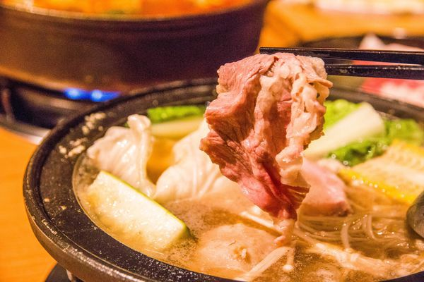

頂級沙朗牛肉石頭火鍋 358元
石頭火鍋的特色就是先拌炒洋蔥等配料，也會炒幾塊肉下去鍋底當中，
不過送上桌之後也沒有覺得自己的肉比較少欸，而且拌炒過的頂級沙朗牛肉也沒比
較老，好吃！
把所有蔬菜都弄下鍋烹煮，底下是瓦斯爐。石頭火鍋原本就是這樣子充滿著濁物，
先拌炒之後湯底就有一些香氣在，自然湯頭也是屬於比較重口味的。
湯頭非常有特色，讓人喝完很想要繼續續湯。

拾七石頭火鍋
拾七菜單
藥膳蔬食燒鍋
心得